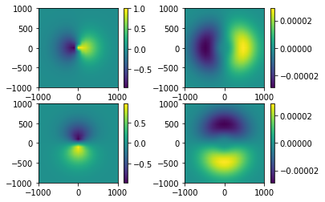
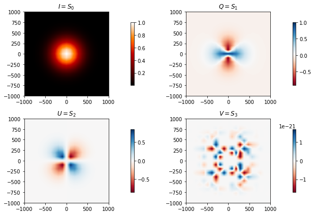
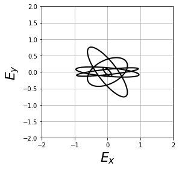
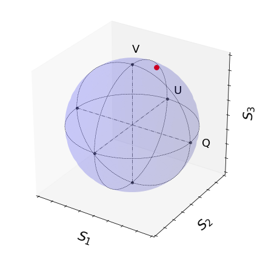

[1]:
%load_ext autoreload
%autoreload 2
%matplotlib inline
# %matplotlib notebook
[3]:
from py_pol import degrees, np
from py_pol.jones_vector import Jones_vector
from py_pol.jones_matrix import Jones_matrix
from py_pol.stokes import Stokes
from py_pol.mueller import Mueller
import matplotlib.pyplot as plt
import numpy as np
np.set_printoptions(precision=2)
np.set_printoptions(suppress=True)
[3]:
from numpy import asarray, linspace, real, imag, exp, sin, cos, sqrt
development: create array with data¶
[4]:
from numpy.random import randn
[5]:
j0=np.matrix(np.zeros((2,5)))
print(j0)
[[0. 0. 0. 0. 0.]
[0. 0. 0. 0. 0.]]
[6]:
j1=(np.matrix(randn(2,5))+1j*np.matrix(randn(2,5)))/np.sqrt(2)
j2=np.matrix(randn(2,5))
print(j1)
[[-0.48-0.38j 0.68+0.66j 0. -0.13j -0.57+0.77j 0.6 +0.09j]
[ 0.09-0.43j 0.01+0.13j 0.08+0.11j -0.06-0.14j -0.68+0.34j]]
Añadir elementos¶
[7]:
# TODO
Pasar de 2D a lista¶
[8]:
from diffractio.vector_sources_XY import Vector_source_XY
from diffractio import np, sp, plt, mm, um, nm, degrees
[9]:
x=np.linspace(-1*mm,1*mm,21)
y=np.linspace(-1*mm,1*mm,21)
wavelength=1*um
[10]:
vs1=Vector_source_XY(x,y,wavelength)
[11]:
vs1.gauss(A=1,
r0=(0.0, 0.0),
z=0.0,
w0=(500,500),
theta=0.0,
phi=0.0,
kind='radial',
v=[1, 0])
Jones¶
[12]:
Ex=vs1.Ex
Ey=vs1.Ey
[13]:
extension = [vs1.x.min(), vs1.x.max(), vs1.y.min(), vs1.y.max()]
fig=plt.figure()
plt.subplot(2,2,1)
h = plt.imshow(
np.real(vs1.Ex), interpolation='bilinear', aspect='auto', origin='lower', extent=extension)
plt.axis('scaled')
plt.colorbar()
plt.subplot(2,2,2)
h = plt.imshow(
np.imag(vs1.Ex), interpolation='bilinear', aspect='auto', origin='lower', extent=extension)
plt.axis('scaled')
plt.colorbar()
plt.subplot(2,2,3)
h = plt.imshow(
np.real(vs1.Ey), interpolation='bilinear', aspect='auto', origin='lower', extent=extension)
plt.axis('scaled')
plt.colorbar()
plt.subplot(2,2,4)
h = plt.imshow(
np.imag(vs1.Ey), interpolation='bilinear', aspect='auto', origin='lower', extent=extension)
plt.axis('scaled')
plt.colorbar()
[13]:
<matplotlib.colorbar.Colorbar at 0x7f3db2bf3550>

Stokes¶
[14]:
vs1.draw(field='E', kind='stokes')
[14]:
((<matplotlib.image.AxesImage at 0x7f3daf286710>,
<matplotlib.image.AxesImage at 0x7f3daf25fc50>,
<matplotlib.image.AxesImage at 0x7f3daf23f208>,
<matplotlib.image.AxesImage at 0x7f3daf19b7b8>),
None,
None)

[15]:
CI, CQ, CU, CV = vs1.polarization_states(matrix=False)
print(CI)
Scalar_field_XY
- x: (21,), y: (21,), u: (21, 21)
- xmin: -1000.00 um, xmax: 1000.00 um
- ymin: -1000.00 um, ymax: 1000.00 um
- Imin: 0.00, Imax: 1.00
- phase_min: 0.00 deg, phase_max: 0.00 deg
- wavelength: 1.00 um
- date: 2019-09-14_09_53_19
- info:
Parámetros de la matriz de polarización cuadrada
[16]:
s0=CI.u
s1=CQ.u
s2=CU.u
s3=CV.u
[17]:
ext = [vs1.x.min(), vs1.x.max(), vs1.y.min(), vs1.y.max()]
fig=plt.figure()
plt.subplot(2,2,1)
h = plt.imshow(
s0, interpolation='bilinear', aspect='auto', origin='lower', extent=extension)
plt.axis('scaled')
plt.subplot(2,2,2)
h = plt.imshow(
s1, interpolation='bilinear', aspect='auto', origin='lower', extent=extension)
plt.axis('scaled')
plt.subplot(2,2,3)
h = plt.imshow(
s2, interpolation='bilinear', aspect='auto', origin='lower', extent=extension)
plt.axis('scaled')
plt.subplot(2,2,4)
h = plt.imshow(
s3, interpolation='bilinear', aspect='auto', origin='lower', extent=extension)
plt.axis('scaled')
[17]:
(-1000.0, 1000.0, -1000.0, 1000.0)

Suma, resta, multiplicacion¶
[18]:
j3=j1+j2
print(j3)
[[ 1.21-0.38j 0.15+0.66j -0.59-0.13j -0.01+0.77j 0.94+0.09j]
[ 0.16-0.43j -0.09+0.13j 0.62+0.11j 0.34-0.14j -0.13+0.34j]]
[19]:
j4=3*j1
print(j4)
[[-1.44-1.13j 2.03+1.97j 0.01-0.4j -1.72+2.31j 1.8 +0.27j]
[ 0.26-1.28j 0.04+0.38j 0.25+0.32j -0.17-0.43j -2.03+1.03j]]
Rotacion de un array de jones vectors¶
¡funciona!
[20]:
from py_pol.utils import rotation_matrix_Jones
[21]:
rotation_matrix_Jones(angle=0)
[21]:
matrix([[ 1., 0.],
[-0., 1.]])
[22]:
rotation_matrix_Jones(angle=45*degrees)*j1
[22]:
matrix([[-0.28-0.57j, 0.49+0.55j, 0.06-0.02j, -0.45+0.44j, -0.05+0.31j],
[ 0.4 -0.04j, -0.47-0.37j, 0.06+0.17j, 0.37-0.65j, -0.9 +0.18j]])
Dibujo de vectores de Jones¶
[23]:
def draw_ellipse_jones(j0, limit='', filename='', draw_arrow=False):
"""Draws polarization ellipse of Jones vector.
Parameters:
j0 (Jones_vector): Jones vector
limit (float): limit for drawing. If empty itis obtained from ampltiudes.
filename (str): name of filename to save the figure.
draw_array (bool): draws chirality of ellipse
Returns:
fig (handle): handle to figure.
ax (handle): handle to axis.
"""
angles = linspace(0, 360 * degrees, 90)
fig = plt.figure()
ax = fig.add_subplot(111)
for i in range(j0.shape[1]):
E_field = asarray(j0[:,i])
E0x = asarray(E_field[0]).squeeze()
E0y = asarray(E_field[1]).squeeze()
Ex = real(E0x * exp(1j * angles))
Ey = real(E0y * exp(1j * angles))
max_size = (sqrt(Ex**2 + Ey**2)).max() * 1.1
if limit in [0, '', [], None]:
limit = max_size * 1.25
ax.plot(Ex, Ey, 'k', lw=2, label='polarized')
if draw_arrow:
ax.arrow(
Ex[0],
Ey[0],
Ex[1] - Ex[0],
Ey[1] - Ey[0],
width=0,
head_width=0.075 * max_size,
fc='k',
ec='k',
length_includes_head=True)
plt.axis('equal')
plt.axis('square')
plt.grid(True)
ax.set_xlim(-limit, limit)
ax.set_ylim(-limit, limit)
ax.set_xlabel('$E_x$', fontsize=22)
ax.set_ylabel('$E_y$', fontsize=22)
plt.tight_layout()
if filename not in (None, [], ''):
plt.savefig(filename)
return fig, ax
[24]:
draw_ellipse_jones(j1, limit=2)
[24]:
(<Figure size 432x288 with 1 Axes>,
<matplotlib.axes._subplots.AxesSubplot at 0x7f3dad746630>)

Global phase¶
[25]:
def remove_global_phase(M):
"""Function that transforms the Jones vector removing the global phase, so the first component of the elcric field is real and positive.
Returns:
E (2x1 numpy matrix): Jones vector."""
a=M[0,:].A.flatten()
ang=np.angle(a)
b=np.asarray(M)
s1=b*np.exp(-1j*ang)
amp=s1[0,:]
s2=s1/amp
return s2
[26]:
a=j1[0,:].A.flatten()
ang=np.angle(a)
b=np.asarray(j1)
s1=b*np.exp(-1j*ang)
amp=s1[0,:]
s2=s1/amp
print(a,'\n')
print(b,'\n')
print(s1,'\n')
print(amp,'\n')
print(s2,'\n')
[-0.48-0.38j 0.68+0.66j 0. -0.13j -0.57+0.77j 0.6 +0.09j]
[[-0.48-0.38j 0.68+0.66j 0. -0.13j -0.57+0.77j 0.6 +0.09j]
[ 0.09-0.43j 0.01+0.13j 0.08+0.11j -0.06-0.14j -0.68+0.34j]]
[[ 0.61+0.j 0.94+0.j 0.13-0.j 0.96+0.j 0.61+0.j ]
[ 0.2 +0.39j 0.1 +0.08j -0.1 +0.09j -0.08+0.13j -0.62+0.44j]]
[0.61+0.j 0.94+0.j 0.13-0.j 0.96+0.j 0.61+0.j]
[[ 1. +0.j 1. +0.j 1. +0.j 1. +0.j 1. +0.j ]
[ 0.32+0.64j 0.1 +0.09j -0.79+0.66j -0.09+0.14j -1.02+0.72j]]
[27]:
remove_global_phase(j1)
[27]:
array([[ 1. +0.j , 1. +0.j , 1. +0.j , 1. +0.j , 1. +0.j ],
[ 0.32+0.64j, 0.1 +0.09j, -0.79+0.66j, -0.09+0.14j, -1.02+0.72j]])
Jones Matrix¶
[28]:
jm0 = Jones_matrix('m0')
jm0.diattenuator_linear(angle=45*degrees)
[28]:
matrix([[0.5+0.j, 0.5+0.j],
[0.5+0.j, 0.5+0.j]])
[29]:
jm0.get(kind='matrix')
[29]:
matrix([[0.5+0.j, 0.5+0.j],
[0.5+0.j, 0.5+0.j]])
[30]:
jm0.get(kind='array')
[30]:
array([[0.5+0.j, 0.5+0.j],
[0.5+0.j, 0.5+0.j]])
[31]:
jm0.get(kind='line')
[31]:
array([0.5+0.j, 0.5+0.j, 0.5+0.j, 0.5+0.j])
Stokes vector¶
[32]:
s0 = Stokes('s0')
s0.general_charac_angles(
alpha=30*degrees, delay=90*degrees, intensity=1, pol_degree=0.95, is_depolarization=False)
s0.general_azimuth_ellipticity(azimuth=45*degrees, ellipticity=22.5*degrees, intensity=1, pol_degree=.95)
print(s0)
s0 = [+1.000; +0.000; +0.672; +0.672]
[33]:
s0.get(kind='matrix')
[33]:
matrix([[1. ],
[0. ],
[0.67],
[0.67]])
[34]:
s0.get(kind='array')
[34]:
array([[1. ],
[0. ],
[0.67],
[0.67]])
[35]:
s0.get(kind='line')
[35]:
array([1. , 0. , 0.67, 0.67])
Mueller Matrix¶
[36]:
mm1 = Mueller('M1')
mm1.diattenuator_linear(p1=1, p2=0, angle=45*degrees)
print(mm1)
M1 @45.00 deg =
[+0.5000, +0.0000, +0.5000, +0.0000]
[+0.0000, +0.0000, +0.0000, +0.0000]
[+0.5000, +0.0000, +0.5000, +0.0000]
[+0.0000, +0.0000, +0.0000, +0.0000]
[37]:
mm1.get(kind='matrix')
[37]:
matrix([[0.5, 0. , 0.5, 0. ],
[0. , 0. , 0. , 0. ],
[0.5, 0. , 0.5, 0. ],
[0. , 0. , 0. , 0. ]])
[38]:
mm1.get(kind='array')
[38]:
array([[0.5, 0. , 0.5, 0. ],
[0. , 0. , 0. , 0. ],
[0.5, 0. , 0.5, 0. ],
[0. , 0. , 0. , 0. ]])
[39]:
mm1.get(kind='line')
[39]:
array([0.5, 0. , 0.5, 0. , 0. , 0. , 0. , 0. , 0.5, 0. , 0.5, 0. , 0. ,
0. , 0. , 0. ])
[40]:
s0.draw_poincare()
